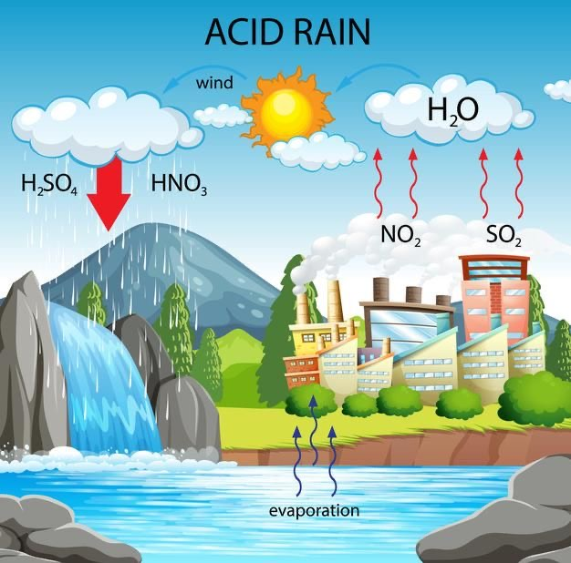
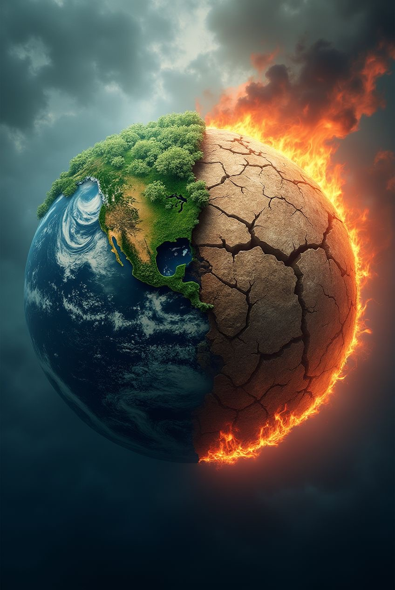
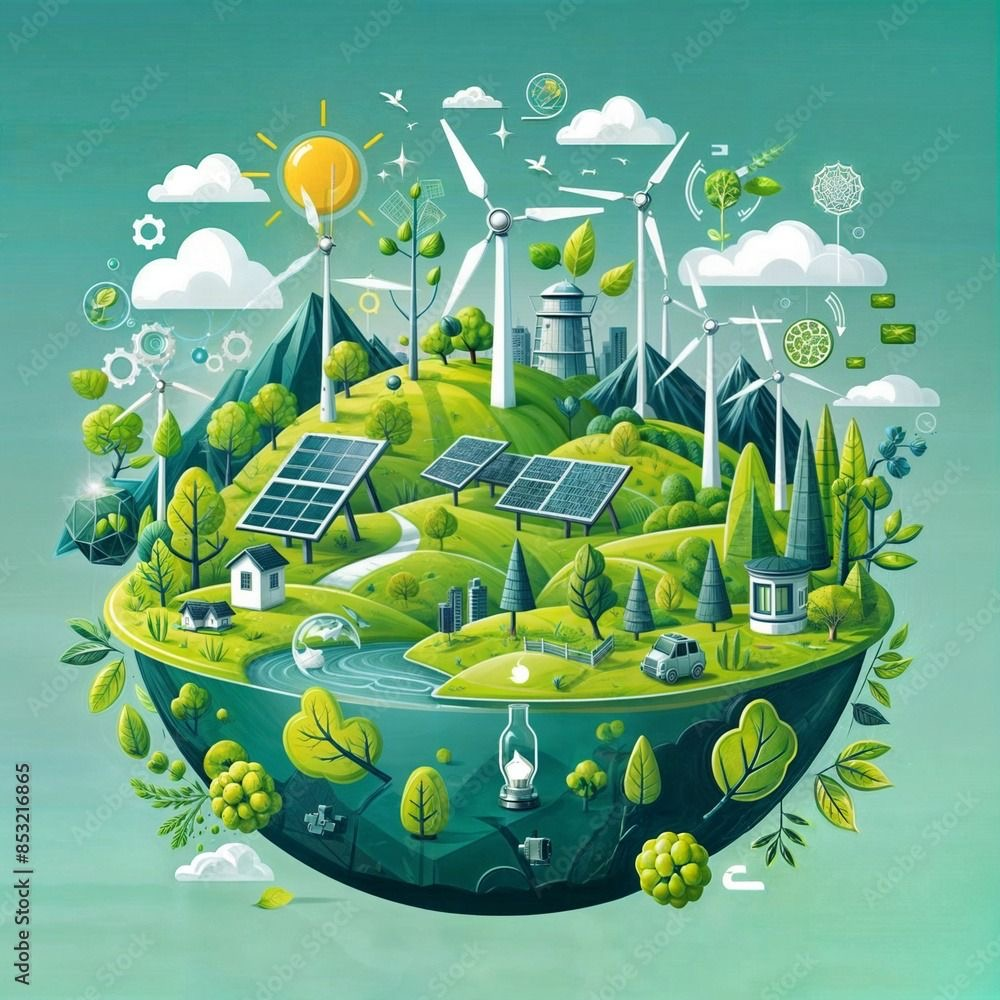
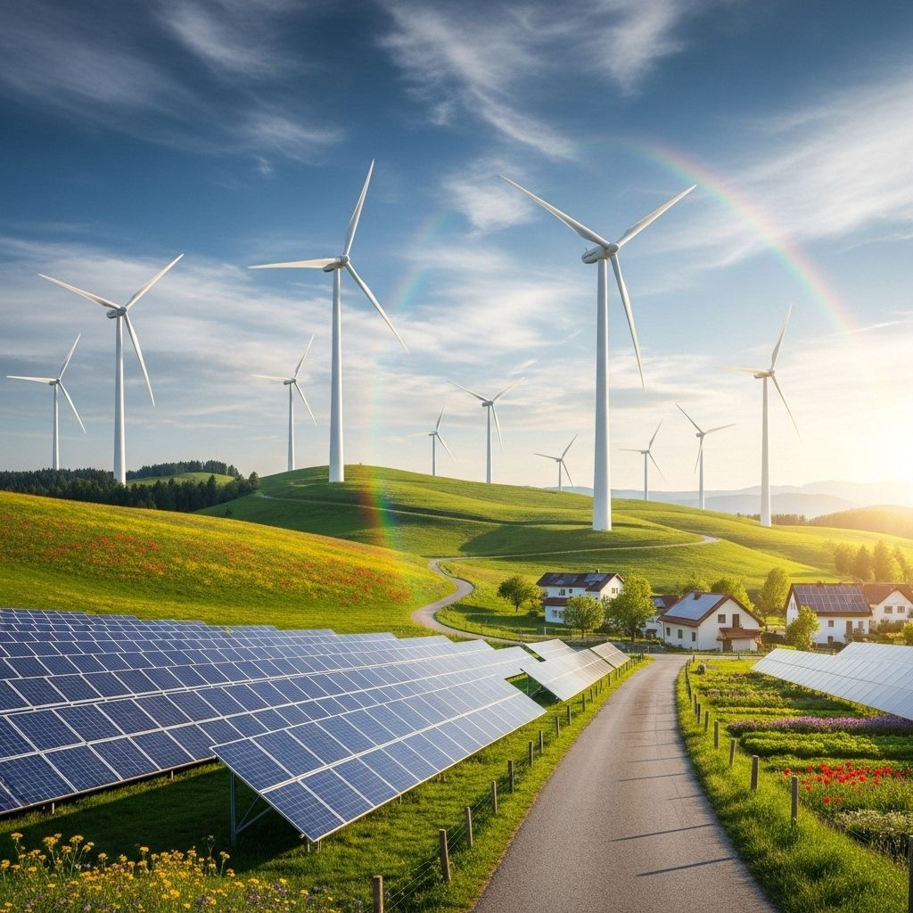
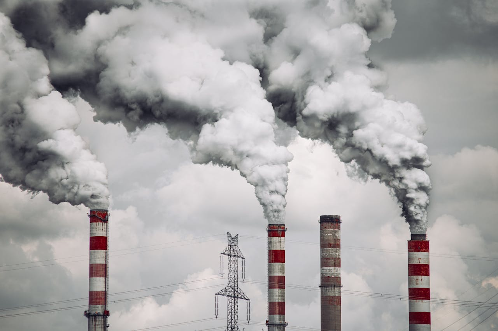

In this session, we will learn about pollution in big cities, burning fossil fuels, conserving fossil fuels,
using fuels, and how scientists record evidence and explain ideas clearly.
We will study environmental problems in big cities.
We will learn the harmful effects of burning fossil fuels.
We will learn how to conserve fossil fuels.
We will compare renewable and nonrenewable fuels.
We will think like scientists and use evidence.
Activity 9: Big City Environmental Problems
Big cities suffer from many environmental problems because of factories, vehicles, chemicals,
pesticides, and the heavy use of fuels.
Smog produced by burning fuels pollutes the air.
Pesticides used in farms may pollute soil and water.
Chemicals used in factories may pollute air, soil, and water.
Air pollution may irritate the eyes and lungs and damage the respiratory system.
Activity 10: Burning Fossil Fuels and Pollution
Fossil fuels such as coal, oil, and natural gas are burned to generate electricity and provide energy,
but burning them causes serious pollution problems.
Burning Fuel
Burning fossil fuels provides energy, but it also pollutes the environment.

Acid Rain
Acid rain harms trees, fish, lakes, soil, and even some rocks used for building.

Global Warming
Carbon dioxide forms a layer in the atmosphere that traps heat and raises Earth’s temperature.
Activity 11: Conserving Fossil Fuels
Fossil fuels should be conserved because they are formed over millions of years
and cannot be replaced quickly.
Use Bicycles
Walking or using bicycles instead of cars helps conserve fossil fuels.

Conserve Energy
Turning off lights and reducing energy use helps save fossil fuels.

Use Renewable Energy
Water, wind, and solar energy can replace fossil fuels in many uses.
Activity 12: Using Fuels
Fuels can be classified into renewable resources and nonrenewable resources.
Renewable Resources
Solar energy, water, wind energy, wood, and charcoal made from wood.

Nonrenewable Resources
Coal, gasoline, oil, and natural gas.
Activity 13: Record Evidence Like a Scientist
Scientists ask questions, make claims, record evidence, and explain ideas clearly.
Question: Where does the fuel we use every day come from?
Claim: Some fuels come from fossil fuels and some come from renewable resources.
Evidence: Coal, oil, and natural gas are nonrenewable, while water and wind are renewable.
Explanation: Fossil fuels are formed over millions of years, but renewable resources can be replaced naturally.
Conclusion
In this session, we learned that pollution in big cities has many causes, especially burning fossil fuels.
We also learned that conserving energy and using renewable resources help protect the environment.